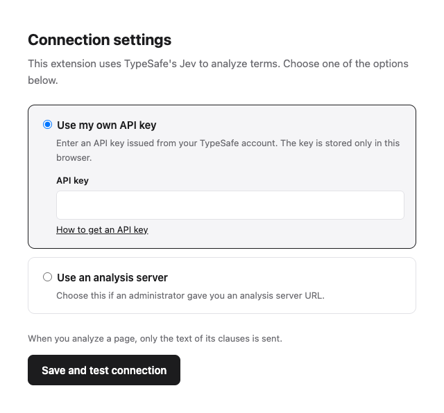
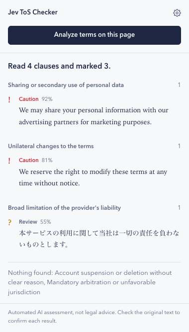

What it does
Terms of service are long, and the clauses that matter most are easy to miss. The extension splits a terms page into clauses and checks each one for five kinds of risk. Every match is shown with its original text, so you can judge it yourself.
- Personal dataSharing your data with third parties or using it for other purposes
- Changes to the termsChanging the terms without telling you in advance
- LiabilityThe provider broadly excluding or limiting its liability
- AccountsSuspending or deleting accounts without clear reasons
- DisputesMandatory arbitration, class action waivers, or courts that are unfavorable to you
- Caution means the clause very likely includes the risk.
- Review means it might. Read the clause and decide.
It works on any site and with terms in any language. The extension itself is shown in English or Japanese, following your browser.
Install
The extension is not on the Chrome Web Store yet, so you install it from a downloaded folder. It takes about two minutes.
- Download jev-tos-checker.zip.
- Unzip it. You get a folder named
jev-tos-checker. Move it somewhere you will keep it, such as your Documents folder. If you delete or move the folder later, the extension stops working. - In Chrome, type
chrome://extensionsin the address bar and press Enter. - Turn on Developer mode in the top-right corner.
- Click Load unpacked and select the
jev-tos-checkerfolder. - Click the puzzle-piece icon in the toolbar and pin Jev ToS Checker so it is always within reach.
Check that the download is genuine (optional)
Release files are built by GitHub Actions in this repository, and GitHub keeps a signed record of each build. If you use the GitHub CLI, run gh attestation verify jev-tos-checker.zip --repo shohei81/jev-tos-checker to confirm your zip came from this repository and has not been modified. This works for releases published after v0.3.0.
Set up a connection
After installation, the settings page opens automatically. Choose one option and click Save and test connection. The extension checks the connection before saving.

Use it
- Open a terms of service or privacy policy page.
- Click the extension icon, then Analyze terms on this page.
- Results are grouped by category. Click a clause to scroll to it on the page.

Update to a new version
- Download the latest jev-tos-checker.zip and unzip it.
- Replace your existing
jev-tos-checkerfolder with the new one. - Open
chrome://extensionsand click the reload icon on Jev ToS Checker.
Your settings are kept. You can find what changed in each version on the Releases page.
Privacy and limits
The extension reads a page only when you click its button, and sends only the text of the clauses, either to TypeSafe or to the analysis server you set up. Nothing is sent in the background.
Results are an automated assessment, not legal advice. The extension can miss clauses or mark ones that are fine, so always read the original text. It works best on pages where each clause is its own paragraph or list item.